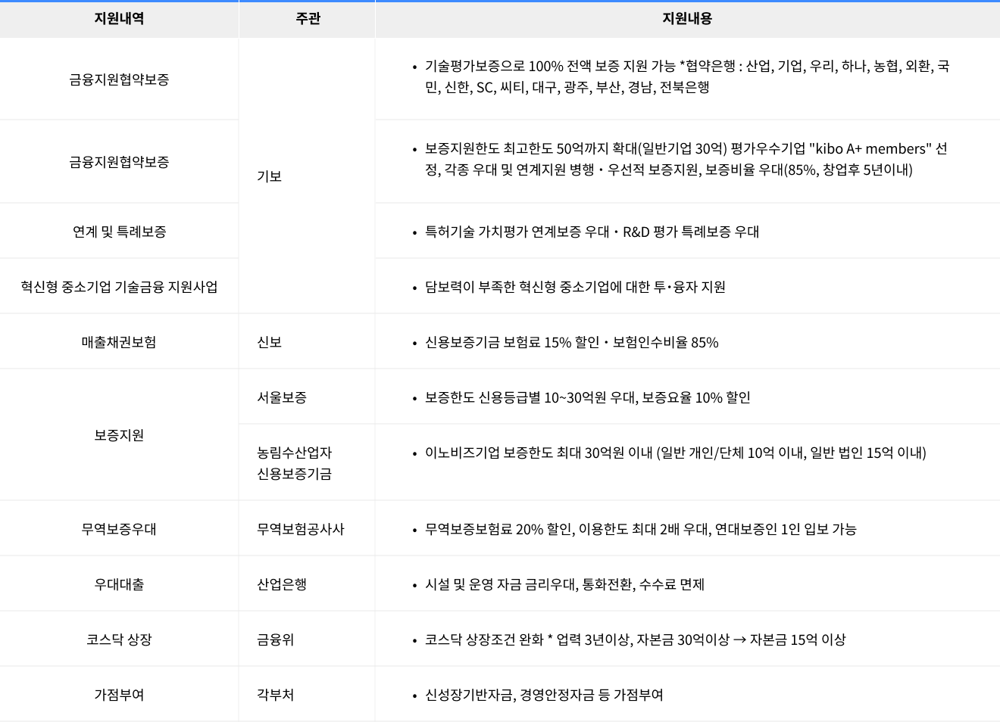

Inno-Biz (이노비즈) 인증
선정기준
온라인 자가진단(예비평가)
- 기술혁신시스템 평가 (1,000점 만점) : 650점 이상 기술혁신 시스템 평가는 4개 분야
- (기술혁신능력, 기술사업화능력, 기술혁신경영능력, 기술혁신성과), 60개 내외 평가항목으로 구성
기술보증기금의 현장평가
- 기술혁신시스템 평가(1,000점 만점) : 700점 이상
- 자가진단(예비평가)시 평가지표를 그대로 적용, 기술보증기금의 전문평가인력에 의한 평가
- 개별기술수준 편가(14등급제) : B등급 이상
- 개별기술수준 평가는 4개 분야(경영주 기술능력, 기술성, 시장성, 사업성, 및 수익성), 34개 내외 평가 항목으로 구성
* [소상공인 보호 및 지원에 관한 법률]상 소상공인 : 상시근로자 5인 미만 업체(제조업, 건설업, 운수업, 광업 : 상시근로자 10인 미만 업체)
선정대상기업 추천(기술보증기금)
- 평가결과를 온라인상(www.innobiz.net)에 등록 게재
- 현장평가결과 기술혁신 평가기준을 동시에 만족해야함
Inno-Biz(중소벤처기업부 - 지방중소벤처기업청)
- 온라인상(www.innobiz.net)의 평가결과를 확인 후, 인증서 번호 부여
- 최종 선정기업에 대해서는 Inno-Biz 확인서를 발급하고 중소기업진흥공단, 협약은행 등에 업체현황 통보
업력 3년 이상
중소기업
- 업종별 기술혁신시스템/평가지표 자가진단체크
- 기술혁신능력 기술사업화능력 기술혁신경영능력 기술혁신성과
- 온라인 자가진단(650점 이상 통과)
- 기술보증기금 현장평가(700점 이상 통과)
- 등급별 업체 선정(900점이상:AAA, 900점~800점:AA, 800점~700점:A)
선정기준
